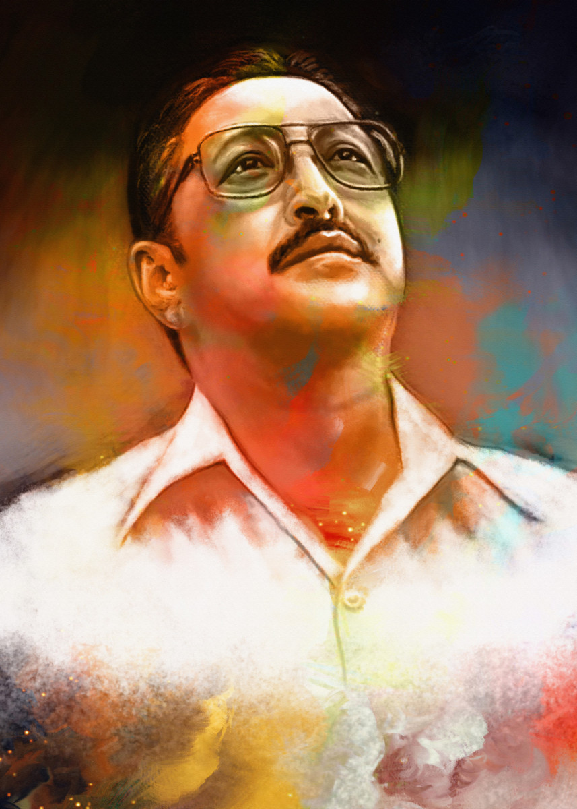

Late King Birendra

Birendra Bir Bikram Shah Dev, (born December 28, 1945, Kathmandu, Nepal—died June 1, 2001, Kathmandu), king of Nepal from 1972 to 2001, 10th in the line of monarchs in the Shah Dev family.
More about King Birendra
About King Birendra
- Birendra was born at the Narayanhiti Royal Palace in Kathmandu as the eldest son of the then Crown Prince Mahendra Bir Bikram Shah Dev and his first wife, Crown Princess Indra Rajya Lakshmi Devi
- Birendra spent eight years studying at St Joseph's School, a Jesuit school in Darjeeling, with his brother Gyanendra. In 13 March 1955, their grandfather King Tribhuvan died and their father succeeded the Nepalese throne. With his father's ascension, Birendra became the crown prince of Nepal
- In 1959, Birendra was enrolled at Eton College in the United Kingdom. After studying at Eton until 1964, he returned to Nepal where he began to explore the country by travelling on foot to the remote parts of the country where he lived humbly with what was available in the villages.
- He later completed his education by spending some time at the University of Tokyo, before studying political theory at Harvard University from 1967 to 1968.[7] Birendra enjoyed travelling in his youth, and went on trips to Canada, Latin America, Africa, many parts of India, and a number of other Asian countries
- He was also an art collector and supporter of Nepalese crafts people and artists, and learnt to fly helicopters
- In 1990, a series of strikes and pro-democracy riots broke out in Nepal
- Due to the riots, Birendra lifted the ban on political parties and agreed to become a constitutional monarch in April 1990
- He appointed an independent Constitution Recommendation Commission to represent the main opposition factions and to prepare a new constitution to accommodate their demands for political reform and the commission presented him with the draft of the proposed constitution on 10 September 1990.
- The draft constitution was approved by the Prime Minister Krishna Prasad Bhattarai and his cabinet and so, on 9 November 1990, Birendra promulgated the new constitution transforming Nepal into a constitutional monarchy
- Birendra, however, could not prevent the Nepalese Civil War, a conflict between Maoist rebels and government forces, which lasted from 1996 until 2006.
For more information, Please visit King Birendra on Wiki.